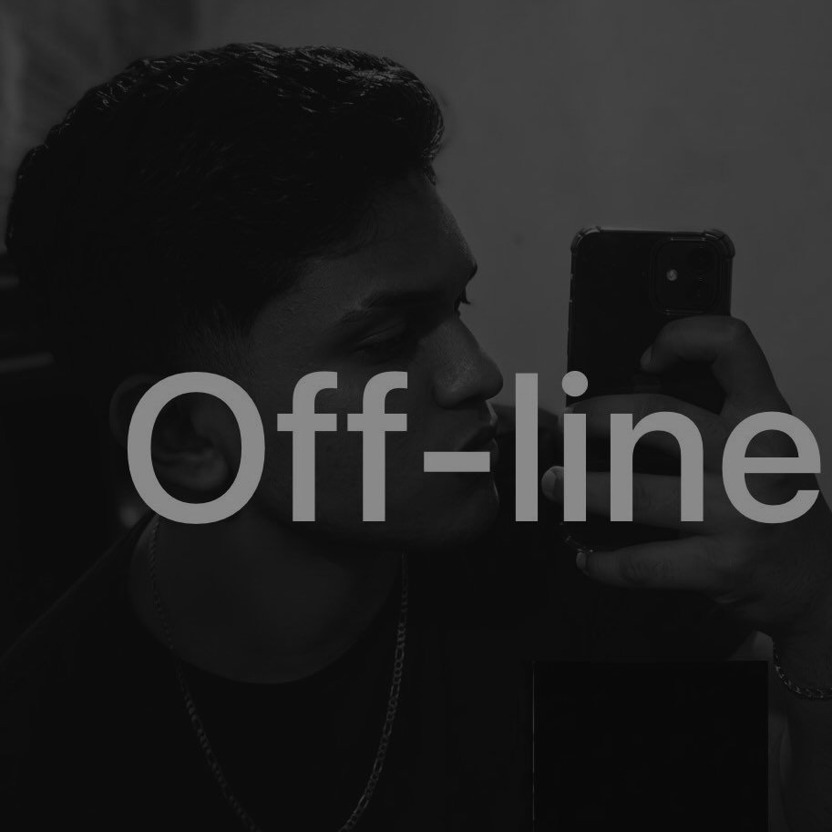

Ian
Programador, designer gráfico e editor de vídeos
........................................................................

Python
Possuo conhecimento em Python, escrevo códigos, crio funções e estruturas de dados. Tenho conhecimento da sintaxe, resolvendo problemas e manipulando arquivos. Uso bibliotecas populares como Pandas e NumPy para análise de dados e cálculos matemáticos. Desejo expandir minha proficiência em áreas como aprendizado de máquina e ciência de dados.

Blender
CProfissional com conhecimento em Blender, focado na criação, modelagem e animação de elementos tridimensionais para enriquecer projetos visuais e audiovisuais.
JavaSc
JavaScript, consigo criar funções, manipular eventos e interagir com elementos da página. Entendo a sintaxe da linguagem, resolvo problemas com estruturas de controle e loops. Tenho noções de manipulação do DOM e posso utilizar bibliotecas como jQuery para efeitos simples.

Photoshop
Perfil criativo especializado em edição digital e manipulação de imagens, com domínio avançado de Photoshop para retoque, correção de cores, tratamento fotográfico e criação de layouts. Profissional focado em transformar conceitos visuais em peças de alta qualidade, combinando técnica e criatividade para otimizar fluxos de trabalho visuais.

Construct
Conhecimento avançado em Construct para criação de jogos complexos e interativos. Programação visual com objetos, eventos e ações. Expertise em gerenciamento de recursos, animações e física. Exploração constante de recursos e técnicas inovadoras para jogos envolventes.